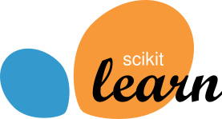
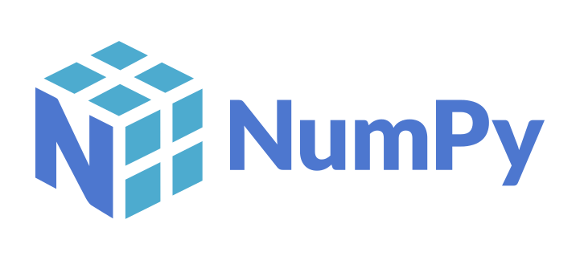
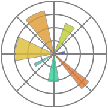

News
- 2026 "Linter-Guided Repair of Quantum Code Smells" accepted at the NeurIPS 2026 SaTQuML workshop.
- 07/2026 Started my second research internship at IBM Research Dublin, on LLM generation of quantum programs.
- 2026 Co-organizing the Generative Code Intelligence Workshop at IJCAI-ECAI 2026.
- 2026 Invited talk at the National University of Singapore (NUS).
- 2026 Papers at ICLR 2026 and ECOOP 2026.
Short Bio
I obtained my Bachelor's Degree in Computer Science in September 2021 and my Master's Degree in July 2023, both from the University of Parma. During my Master's thesis, titled "Abstract Compilation Techniques for Static Analysis", I began working in the field of static analysis by abstract interpretation. Under the supervision of Professors Arceri and Zaffanella, I implemented two abstract compilation techniques focusing on the accuracy/efficiency trade-off. During my Master's degree, I also collaborated with the Department of Food and Drugs at the University of Parma on a research project that involved using constraint programming and molecular modeling methods to predict possible protein mutations of the SARS-CoV-2 virus.
I am currently a Ph.D. student at Ca’ Foscari University of Venice, where my research interests include static analysis, abstract interpretation, and, more broadly, formal methods for program verification with a major focus on data science and artificial intelligence. My thesis, "Static Analysis for Unconventional Targets", applies static analysis to LLM-generated code and to data science pipelines.
During my Ph.D. studies, I have further enriched my research experience through international research internships. In particular, I was a visiting researcher in the ANTIQUE group (Inria & École Normale Supérieure, Paris, France), where I worked on static analysis by abstract interpretation of data science and machine learning software and on verified explanations for neural networks. I then carried out two research internships at IBM Research Dublin: the first (2025) on the security of Generative AI (blue-teaming and guardrails for function-calling agents), the second (2026) on improving LLM generation of quantum programs through linter-guided repair.
I co-organized the Generative Code Intelligence Workshop (ECAI 2025, IJCAI-ECAI 2026) and regularly serve on artifact evaluation committees.
Education
Ph.D. Student in Computer Science
Thesis: Static Analysis for Unconventional Targets - Analyzing LLM-Generated Code and Data Science Pipelines
Advisors: Prof. Agostino Cortesi (Ca' Foscari), Prof. Enea Zaffanella and Prof. Vincenzo Arceri (University of Parma)
The thesis applies static analysis to two unconventional targets.
The first is code written by Large Language Models: an autonomous generate-verify-repair pipeline checks LLM-generated code for correctness and vulnerabilities before deployment, using testing and static analysis reports as feedback to repair it. This raised the correctness and safety of the generated code by 59% and 89% respectively.
The second is data science code: Pyra, a static analyzer based on abstract interpretation, annotates programs through a domain of abstract data types and reports data science code smells that are caught neither at compile time nor at run time.
Master's Degree in Computer Science
Thesis: Abstract Compilation Techniques for Static Analysis
Advisor: Prof. Enea Zaffanella
The main contribution of the thesis was the implementation of two instances of abstract compilation techniques in the Crab/Clam static analysis framework: the split operator and the likely unconstrained variable oracles.
The former provides a new operator and approach for the filter operation on a predicate on abstract domains, avoiding the inefficiencies of the default procedure, and improving the efficiency of the analysis without losing precision.
The latter proposes four different implementations of an oracle whose purpose is to suggest which variables are likely to be unconstrained in the CFG's statements. By systematically propagating the guessed lack of information, the oracle guides the simplification of the abstract program, leading to remarkable speedups.
Bachelor's Degree in Computer Science
Thesis: Development of an Interface for Explainable AI for CAT Scan Analysis
Advisor: Prof. Alessandro Dal Palù
The main contribution of the thesis is the implementation of a framework that allows the user to understand clearly, in natural language, the motivations behind the result (i.e., the arteries retrieved inside the CAT scan and their connections) produced by the Answer Set Programming reasoner. The framework allows the user to also add new rules, expressed in natural language and then translated in AnsProlog, to the knowledge base used by the reasoner.
High School Diploma (Maturità Classica)
Publications
17 publications, 8 as first author. Full list on Google Scholar.
WorkshopNeurIPS 2026 WorkshopDolcetti, G., et al. (2026). Linter-Guided Repair of Quantum Code Smells. NeurIPS 2026 Workshop on Safe and Trustworthy Quantum Machine Learning (SaTQuML).
TBA
TBA
WorkshopNSAD 2026Dolcetti, G., Zizzo, G., Arceri, V., Maffeis, S., & Cortesi, A. (2026). Quantum Computing and Static Analysis: State of the Art and Research Opportunities. Proceedings of the 11th ACM SIGPLAN International Workshop on Numerical and Symbolic Abstract Domains (NSAD 2026), pp. 26-33.
@inproceedings{Dolcetti_2026, series={NSAD '26}, title={Quantum Computing and Static Analysis: State of the Art and Research Opportunities}, url={http://dx.doi.org/10.1145/3840563.3843709}, DOI={10.1145/3840563.3843709}, booktitle={Proceedings of the 11th ACM SIGPLAN International Workshop on Numerical and Symbolic Abstract Domains}, publisher={ACM}, author={Dolcetti, Greta and Zizzo, Giulio and Arceri, Vincenzo and Maffeis, Sergio and Cortesi, Agostino}, year={2026}, month=oct, pages={26--33} }
Due to its fast evolution, quantum computing is increasingly becoming a software problem, one that requires particular care because of the intrinsic peculiarities of quantum programs. Static analysis for quantum programs is still in its infancy. It has produced both principled semantic techniques and practical pattern-based linters, but the two are not connected yet, resulting in limited adoption. In this paper, we provide a concise presentation of the current state of the art, identify the challenges for static analysis of quantum programs, and propose a programmatic research agenda to address them, pairing each challenge with a concrete first step. Rather than surveying in depth existing analyses, this paper argues that the current generation of quantum static analysis tools is still missing the abstractions and infrastructures that enabled the success of static analysis for classical software. We identify these missing ingredients and outline a research roadmap for the next generation of quantum program analyzers.
ConferenceECOOP 2026De Palma, A., Dolcetti, G., & Urban, C. (2026). Faster Verified Explanations for Neural Networks. 40th European Conference on Object-Oriented Programming (ECOOP 2026), LIPIcs, Volume 372, pp. 3:1-3:32.
@inproceedings{depalma2026faster, author={De Palma, Alessandro and Dolcetti, Greta and Urban, Caterina}, title={Faster Verified Explanations for Neural Networks}, booktitle={40th European Conference on Object-Oriented Programming (ECOOP 2026)}, series={Leibniz International Proceedings in Informatics (LIPIcs)}, volume={372}, pages={3:1--3:32}, publisher={Schloss Dagstuhl -- Leibniz-Zentrum f{\"u}r Informatik}, year={2026}, doi={10.4230/LIPIcs.ECOOP.2026.3} }
Verified explanations are a theoretically-principled way to explain the decisions taken by neural networks, which are otherwise black-box in nature. However, these techniques face significant scalability challenges, as they require multiple calls to neural network verifiers, each of them with an exponential worst-case complexity. We present FaVeX, a novel algorithm to compute verified explanations. FaVeX accelerates the computation by dynamically combining batch and sequential processing of input features, and by reusing information from previous queries, both when proving invariances with respect to certain input features, and when searching for feature assignments altering the prediction. Furthermore, we present a novel and hierarchical definition of verified explanations, termed verifier-optimal robust explanations, that explicitly factors the incompleteness of network verifiers within the explanation. Our comprehensive experimental evaluation demonstrates the superior scalability of both FaVeX, and of verifier-optimal robust explanations, which together can produce meaningful formal explanation on networks with hundreds of thousands of non-linear activations.
ConferenceICLR 2026Huang, Y., Hua, H., Zhou, Y., Jing, P., Nagireddy, M., Padhi, I., Dolcetti, G., ... & Zhang, X. (2026). Building a Foundational Guardrail for General Agentic Systems via Synthetic Data. The Fourteenth International Conference on Learning Representations (ICLR 2026).
@article{DBLP:journals/corr/abs-2510-09781, author = {Yue Huang and Hang Hua and Yujun Zhou and Pengcheng Jing and Manish Nagireddy and Inkit Padhi and Greta Dolcetti and Zhangchen Xu and Subhajit Chaudhury and Ambrish Rawat and Liubov Nedoshivina and Pin{-}Yu Chen and Prasanna Sattigeri and Xiangliang Zhang}, title = {Building a Foundational Guardrail for General Agentic Systems via Synthetic Data}, journal = {CoRR}, volume = {abs/2510.09781}, year = {2025}, url = {https://doi.org/10.48550/arXiv.2510.09781}, doi = {10.48550/ARXIV.2510.09781}, eprinttype = {arXiv}, eprint = {2510.09781}, timestamp = {Tue, 16 Dec 2025 15:44:39 +0100}, biburl = {https://dblp.org/rec/journals/corr/abs-2510-09781.bib}, bibsource = {dblp computer science bibliography, https://dblp.org} }
While LLM agents can plan multi-step tasks, intervening at the planning stage-before any action is executed-is often the safest way to prevent harm, since certain risks can lead to severe consequences once carried out. However, existing guardrails mostly operate post-execution, which is difficult to scale and leaves little room for controllable supervision at the plan level. To address this challenge, we highlight three critical gaps in current research: data gap, model gap, and evaluation gap. To close the data gap, we introduce AuraGen, a controllable engine that (i) synthesizes benign trajectories, (ii) injects category-labeled risks with calibrated difficulty, and (iii) filters outputs via an automated reward model, producing large and reliable corpora for pre-execution safety. To close the guardian model gap, we propose a foundational guardrail Safiron, combining a cross-planner adapter with a compact guardian model. The adapter unifies different input formats, while Safiron flags risky cases, assigns risk types, and generates rationales; trained in two stages with a broadly explored data recipe, Safiron achieves robust transfer across settings. To close the evaluation gap, we release Pre-Exec Bench, a realistic benchmark covering diverse tools and branching trajectories, which measures detection, fine-grained categorization, explanation, and cross-planner generalization in human-verified scenarios. Extensive experiments demonstrate consistent gains of the proposed guardrail over strong baselines on Pre-Exec Bench, and ablations further distill actionable practices, providing a practical template for safer agentic systems.
JournalDiscover AIDolcetti, G., Arceri, V., Iotti, E., Maffeis, S., Cortesi, A., & Zaffanella, E. (2026). Helping LLMs improve code generation using feedback from testing and static analysis. Discover Artificial Intelligence, 6(1), 314.
@article{Dolcetti_2026_discover, title={Helping LLMs improve code generation using feedback from testing and static analysis}, volume={6}, ISSN={2731-0809}, url={http://dx.doi.org/10.1007/s44163-026-01009-5}, DOI={10.1007/s44163-026-01009-5}, number={1}, pages={314}, journal={Discover Artificial Intelligence}, publisher={Springer Science and Business Media LLC}, author={Dolcetti, Greta and Arceri, Vincenzo and Iotti, Eleonora and Maffeis, Sergio and Cortesi, Agostino and Zaffanella, Enea}, year={2026}, month=mar }
Large Language Models (LLMs) are one of the most promising developments in the field of artificial intelligence, and the software engineering community has readily noticed their potential role in the software development life-cycle. Developers routinely ask LLMs to generate code snippets, increasing productivity but also potentially introducing ownership, privacy, correctness, and security issues. Previous work highlighted how code generated by mainstream commercial LLMs is often not safe, containing vulnerabilities, bugs, and code smells. In this paper, we present a framework that leverages testing and static analysis to assess the quality, and guide the self-improvement, of code generated by general-purpose, open-source LLMs. First, we ask LLMs to generate C code to solve a number of programming tasks. Then we employ ground-truth tests to assess the (in)correctness of the generated code, and a static analysis tool to detect potential safety vulnerabilities. Next, we assess the models ability to evaluate the generated code, by asking them to detect errors and vulnerabilities. Finally, we test the models ability to fix the generated code, providing the reports produced during the static analysis and incorrectness evaluation phases as feedback. Our results show that models often produce incorrect code, and that the generated code can include safety issues. Moreover, they perform very poorly at detecting either issue. On the positive side, we observe a substantial ability to fix flawed code when provided with information about failed tests or potential vulnerabilities, indicating a promising avenue for improving the safety of LLM-based code generation tools.
JournalKnowledge-Based Systems Dolcetti, G., Arceri, V., Mensi, A., Zaffanella, E., Urban, C., & Cortesi, A. (2026). PYRA: A High-level Linter for Data Science Software. Knowledge-Based Systems, 115412.
@article{DOLCETTI2026115412, title = {PYRA: A high-level linter for data science software}, journal = {Knowledge-Based Systems}, volume = {337}, pages = {115412}, year = {2026}, issn = {0950-7051}, doi = {https://doi.org/10.1016/j.knosys.2026.115412}, url = {https://www.sciencedirect.com/science/article/pii/S0950705126001553}, author = {Greta Dolcetti and Vincenzo Arceri and Antonella Mensi and Enea Zaffanella and Caterina Urban and Agostino Cortesi}, keywords = {Static analysis, Jupyter notebooks, Data science}, }
Due to its interdisciplinary nature, the development of data science software is particularly prone to a wide range of potential mistakes that can easily and silently compromise the final results. Several tools have been proposed that can help the data scientist in identifying the most common, low-level programming issues. However, these tools often fall short in detecting higher-level, domain-specific issues typical of data science pipelines, where subtle errors may not trigger exceptions but can still lead to incorrect or misleading outcomes, or unexpected behaviors. In this paper, we present PYRA, a static analysis tool that aims at detecting code smells in data science workflows. PYRA builds upon the Abstract Interpretation framework to infer abstract datatypes, and exploits such information to flag 16 categories of potential code smells concerning misleading visualizations, challenges for reproducibility, as well as misleading, unreliable or unexpected results. Unlike traditional linters, which focus on syntactic or stylistic issues, PYRA reasons over a domain-specific type system to identify data science-specific problems - such as improper data preprocessing steps and procedures' misapplications - that could silently propagate through a data-manipulation pipeline. Beyond static checking, we envision tools like PYRA becoming integral components of the development loop, with analysis reports guiding correction and helping assess the reliability of machine learning pipelines. We evaluate PYRA on a benchmark suite of real-world Jupyter notebooks, showing its effectiveness in detecting practical data science issues, thereby enhancing transparency, correctness, and reproducibility in data science software.
WorkshopAAAI 2026 WorkshopDolcetti, G., Zizzo, G., & Maffeis, S. (2026). Blue Teaming Function-Calling Agents. AAAI 2026 Workshop on Trust and Control in Agentic AI (TrustAgent). arXiv preprint arXiv:2601.09292.
@article{dolcetti2026blue, title={Blue Teaming Function-Calling Agents}, author={Dolcetti, Greta and Zizzo, Giulio and Maffeis, Sergio}, journal={arXiv preprint arXiv:2601.09292}, year={2026} }
We present an experimental evaluation that assesses the robustness of four open source LLMs claiming function-calling capabilities against three different attacks, and we measure the effectiveness of eight different defences. Our results show how these models are not safe by default, and how the defences are not yet employable in real-world scenarios.
JournalPeerJ CSArceri, V., Bianchi, F., Dolcetti, G., & Zaffanella, E. (2025). Faster numeric static analyses with unconstrained variable oracles. PeerJ Computer Science, 11, e3390.
@article{DBLP:journals/peerj-cs/ArceriBDZ25, author = {Vincenzo Arceri and Filippo Bianchi and Greta Dolcetti and Enea Zaffanella}, title = {Faster numeric static analyses with unconstrained variable oracles}, journal = {PeerJ Comput. Sci.}, volume = {11}, pages = {e3390}, year = {2025}, url = {https://doi.org/10.7717/peerj-cs.3390}, doi = {10.7717/PEERJ-CS.3390}, timestamp = {Sun, 04 Jan 2026 13:45:29 +0100}, biburl = {https://dblp.org/rec/journals/peerj-cs/ArceriBDZ25.bib}, bibsource = {dblp computer science bibliography, https://dblp.org} }
In the context of static analysis based on abstract interpretation, we propose a lightweight pre-analysis step which is meant to suggest, at each program point, which program variables are likely to be unconstrained for a specific class of numeric abstract properties. Using the outcome of this pre-analysis step as an oracle, we simplify the statements of the program being analyzed by propagating this lack of information, aiming at fine-tuning the precision/efficiency trade-off of the target static analysis. A thorough experimental evaluation considering real world programs shows that the idea underlying the approach is promising. We first discuss and evaluate several variants of the pre-analysis step, measuring their accuracy at predicting unconstrained variables, so as to identify the most effective ones. Then we evaluate how these pre-analyses affect the target static analysis, showing that they can improve the efficiency of the more costly analysis while having a limited effect on its precision.
JournalFrontiers in CSDolcetti, G., & Iotti, E. (2025). A dual perspective review on large language models and code verification. Frontiers in Computer Science, 7, 1655469.
@article{dolcetti2025dual, title={A dual perspective review on large language models and code verification}, author={Dolcetti, Greta and Iotti, Eleonora}, journal={Frontiers in Computer Science}, volume={7}, pages={1655469}, year={2025}, publisher={Frontiers Media SA} }
Recent advances in Large Language Models (LLMs) have sparked significant interest in their application to code verification and the assessment of LLM-generated code safety. This review examines current research on the intersection of LLMs with software verification, focusing on two main aspects: the use of LLMs as verification tools and the verification of code produced by LLMs. We analyze the emerging approaches for integrating LLMs with traditional static analyzers and formal verification tools, including prompt engineering techniques and combinations with established verification frameworks. The review explores various verification methodologies, from standalone LLM applications to hybrid approaches incorporating traditional verification methods. We examine research addressing the safety assessment of LLM-generated code and investigate frameworks developed for vulnerability detection and repair. Through this analysis, we aim to provide insights into the current state of LLM applications in code verification, identify key challenges in the field, and outline important directions for future research in this rapidly evolving domain.
ConferenceECML PKDD 2025Dolcetti, G., Arceri, V., Mensi, A., Zaffanella, E., Urban, C., & Cortesi, A. (2025, September). Introducing Pyra: A High-Level Linter for Data Science Software. In Joint European Conference on Machine Learning and Knowledge Discovery in Databases (pp. 449-453). Cham: Springer Nature Switzerland.
@inproceedings{DBLP:conf/pkdd/DolcettiAMZUC25, author = {Greta Dolcetti and Vincenzo Arceri and Antonella Mensi and Enea Zaffanella and Caterina Urban and Agostino Cortesi}, editor = {In{\^{e}}s Dutra and Mykola Pechenizkiy and Paulo Cortez and Sepideh Pashami and Arian Pasquali and Nuno Moniz and Al{\'{\i}}pio M. Jorge and Carlos Soares and Pedro H. Abreu and Jo{\~{a}}o Gama}, title = {Introducing Pyra: {A} High-Level Linter for Data Science Software}, booktitle = {Machine Learning and Knowledge Discovery in Databases. Applied Data Science Track and Demo Track - European Conference, {ECML} {PKDD} 2025, Porto, Portugal, September 15-19, 2025, Proceedings, Part {X}}, series = {Lecture Notes in Computer Science}, volume = {16022}, pages = {449--453}, publisher = {Springer}, year = {2025}, url = {https://doi.org/10.1007/978-3-032-06129-4\_29}, doi = {10.1007/978-3-032-06129-4\_29}, timestamp = {Sun, 09 Nov 2025 16:31:12 +0100}, biburl = {https://dblp.org/rec/conf/pkdd/DolcettiAMZUC25.bib}, bibsource = {dblp computer science bibliography, https://dblp.org} }
We present Pyra, a static analysis tool that aims at detecting code smells in data science workflows. Our goal is to capture potential issues, focusing on misleading visualizations, challenges for reproducibility, as well as misleading, unreliable or unexpected results. Link to the demo: https://www.youtube.com/watch?v=D-AsyuhsTyoGitHub repository: https://github.com/spangea/Pyra
WorkshopOVERLAY 2025Dolcetti, G., Arceri, V., Cortesi, A., & Zaffanella, E. (2025). On the Verification of ML Systems and Models.
N/A
The role and impact of machine learning systems and models are growing in every economic and social sector. The problem of guaranteeing the reliability and correctness of the underlying software therefore becomes increasingly relevant. In this article we identify the elements that characterize these systems and that have a challenging impact on the application of state-of-the-art verification techniques and we highlight the advantages and limitations of a set of formal techniques that can be combined to achieve this goal. In principle, we advocate not only for a deeper adoption of formal methods in the machine learning development and deployment, but also for a more systematic and holistic approach.
WorkshopNSAD 2024Dolcetti G., Cortesi A., Urban C. & Zaffanella E. (2024). Towards a High Level Linter for Data Science. Proceedings of 10th International Workshop on Numerical and Symbolic Abstract Domains (NSAD 2024), 22 October 2024, Pasadena, California, United States.
TBA
Due to its interdisciplinary nature, the development of data science code is subject to a wide range of potential mistakes that can easily compromise the final results. Several tools have been proposed that can help the data scientist in identi- fying the most common, low level programming issues. We discuss the steps needed to implement a tool that is rather meant to focus on higher level errors that are specific of the data science pipeline. To this end, we propose a static analysis assigning ad hoc abstract datatypes to the program variables, which are then checked for consistency when call- ing functions defined in data science libraries. By adopting a descriptive (rather than prescriptive) abstract type system, we obtain a linter tool reporting data science related code smells. While being still work in progress, the current proto- type is able to identify and report the code smells contained in several examples of questionable data science code.
WorkshopFTfJP 2024Arceri V., Merenda S. M., Dolcetti G., Negrini L., Olivieri L., & Zaffanella E. (2024). Towards a Sound Construction of EVM Bytecode Control-flow Graphs. Proceedings of Formal Techniques for Java-like Programs (FTfJP 2024), 20 September 2024, Vienna, Austria.
@inproceedings{DBLP:conf/ftfjp/ArceriMDNOZ24, author = {Vincenzo Arceri and Saverio Mattia Merenda and Greta Dolcetti and Luca Negrini and Luca Olivieri and Enea Zaffanella}, editor = {Luca Di Stefano}, title = {Towards a Sound Construction of {EVM} Bytecode Control-Flow Graphs}, booktitle = {Proceedings of the 26th {ACM} International Workshop on Formal Techniques for Java-like Programs, FTfJP 2024, Vienna, Austria, 20 September 2024}, pages = {11--16}, publisher = {{ACM}}, year = {2024}, url = {https://doi.org/10.1145/3678721.3686227}, doi = {10.1145/3678721.3686227}, timestamp = {Tue, 22 Oct 2024 21:07:21 +0200}, biburl = {https://dblp.org/rec/conf/ftfjp/ArceriMDNOZ24.bib}, bibsource = {dblp computer science bibliography, https://dblp.org} }
Ethereum enables the creation and execution of decentralized applications through smart contracts, that are compiled to Ethereum Virtual Machine (EVM) bytecode. Once deployed in the blockchain, the bytecode is immutable; hence, ensuring that smart contracts are bug-free before their deployment is of utmost importance. A crucial preliminary step for any effective static analysis of EVM bytecode is the extraction of the control-flow graph (CFG): this presents significant challenges due to dynamically computed jump destinations. In this paper we present a novel approach, based on abstract intepretation, aiming at building a sound CFG from EVM bytecode smart contracts. Our analysis, which is implemented in our static analyzer EVMLiSA, is based on a parametric abstract domain that approximates concrete execution stacks at each program point as a $l$-sized set of abstract stacks of maximal height $h$; the results of the analysis are then used to resolve the jump destinations at jump nodes. On our preliminary experiments, by fine-tuning the analysis parameters, EVMLiSA achives sound CFGs for all smart contracts where permantent storage-related opcodes do not influence jump destinations.
JournalSTTTArceri V., Dolcetti G. & Zaffanella E. (2024). Speeding up Static Analysis with the Split Operator. International Journal on Software Tools for Technology Transfer, Special Issue for SOAP 2023.
@article{DBLP:journals/sttt/ArceriDZ24, author = {Vincenzo Arceri and Greta Dolcetti and Enea Zaffanella}, title = {Speeding up static analysis with the split operator}, journal = {Int. J. Softw. Tools Technol. Transf.}, volume = {26}, number = {5}, pages = {573--588}, year = {2024}, url = {https://doi.org/10.1007/s10009-024-00761-2}, doi = {10.1007/S10009-024-00761-2}, timestamp = {Mon, 07 Oct 2024 22:58:44 +0200}, biburl = {https://dblp.org/rec/journals/sttt/ArceriDZ24.bib}, bibsource = {dblp computer science bibliography, https://dblp.org} }
In the context of abstract interpretation-based static analysis, we propose a new abstract operator modeling the split of control flow paths: the goal of the operator is to enable a more efficient analysis when using abstract domains that are computationally expensive, having no negative effect on precision, and occasionally resulting in a more precise analysis. We focus on the case of conditional branches guarded by numeric linear constraints, including implicit numerical branches. We provide an experimental evaluation of real-world test cases, showing that by using the split operator we can achieve significant efficiency improvements with respect to the classical approach for a static analysis based on the domain of convex polyhedra. We also briefly discuss the applicability of this new operator to different, possibly non-numeric abstract domains.
WorkshopSOAP 2023Arceri V., Dolcetti G. & Zaffanella E. (2023). Speeding up Static Analysis with the Split Operator. Proceedings of 12th ACM SIGPLAN International Workshop on the State of the Art in Program Analysis, SOAP@PLDI 2023, June 17, 2023, Orlando, Florida, United States.
@inproceedings{DBLP:conf/pldi/ArceriDZ23, author = {Vincenzo Arceri and Greta Dolcetti and Enea Zaffanella}, editor = {Pietro Ferrara and Liana Hadarean}, title = {Speeding up Static Analysis with the Split Operator}, booktitle = {Proceedings of the 12th {ACM} {SIGPLAN} International Workshop on the State Of the Art in Program Analysis, {SOAP} 2023, Orlando, FL, USA, 17 June 2023}, pages = {14--19}, publisher = {{ACM}}, year = {2023}, url = {https://doi.org/10.1145/3589250.3596141}, doi = {10.1145/3589250.3596141}, timestamp = {Sun, 12 Nov 2023 02:12:56 +0100}, biburl = {https://dblp.org/rec/conf/pldi/ArceriDZ23.bib}, bibsource = {dblp computer science bibliography, https://dblp.org} }
In the context of static analysis based on Abstract Interpretation, we propose a new abstract operator modeling the split of control flow paths: the goal of the operator is to enable a more efficient analysis when using abstract domains that are computationally expensive, having no effect on precision. Focusing on the case of conditional branches guarded by numeric linear constraints, we provide a preliminary experimental evaluation showing that, by using the split operator, we can achieve significant efficiency improvements for a static analysis based on the domain of convex polyhedra. We also briefly discuss the applicability of this new operator to different, possibly non-numeric abstract domains.
ConferenceSAS 2023Arceri V., Dolcetti G. & Zaffanella E. (2023). Unconstrained Variable Oracles for Faster Static Analyses. Proceedings of 30th Static Analysis Symposium, SAS 2023, Sun 22 - Tue 24 October 2023 Cascais, Portugal.
@inproceedings{DBLP:conf/sas/ArceriDZ23, author = {Vincenzo Arceri and Greta Dolcetti and Enea Zaffanella}, editor = {Manuel V. Hermenegildo and Jos{\'{e}} F. Morales}, title = {Unconstrained Variable Oracles for Faster Numeric Static Analyses}, booktitle = {Static Analysis - 30th International Symposium, {SAS} 2023, Cascais, Portugal, October 22-24, 2023, Proceedings}, series = {Lecture Notes in Computer Science}, volume = {14284}, pages = {65--83}, publisher = {Springer}, year = {2023}, url = {https://doi.org/10.1007/978-3-031-44245-2\_5}, doi = {10.1007/978-3-031-44245-2\_5}, timestamp = {Thu, 09 Nov 2023 21:13:04 +0100}, biburl = {https://dblp.org/rec/conf/sas/ArceriDZ23.bib}, bibsource = {dblp computer science bibliography, https://dblp.org} }
In the context of static analysis based on Abstract Interpretation, we propose a lightweight pre-analysis step which is meant to suggest, at each program point, which program variables are likely to be unconstrained for a specific class of numeric abstract properties. Using the outcome of this pre-analysis as an oracle, we simplify the statements of the program being analyzed by propagating this lack of information, aiming at fine-tuning the precision/efficiency trade-off of the analysis. A preliminary experimental evaluation shows that the idea underlying the approach is promising, as it improves the efficiency of the more costly analysis while having a limited effect on its precision.
JournalMoleculesCozzini, P., Agosta, F., Dolcetti, G., & Dal Palù, A. (2023). A Computational Workflow to Predict Biological Target Mutations: The Spike Glycoprotein Case Study. Molecules, 28(20), 7082.
@Article{molecules28207082, AUTHOR = {Cozzini, Pietro and Agosta, Federica and Dolcetti, Greta and Dal Palù, Alessandro}, TITLE = {A Computational Workflow to Predict Biological Target Mutations: The Spike Glycoprotein Case Study}, JOURNAL = {Molecules}, VOLUME = {28}, YEAR = {2023}, NUMBER = {20}, ARTICLE-NUMBER = {7082}, URL = {https://www.mdpi.com/1420-3049/28/20/7082}, PubMedID = {37894561}, ISSN = {1420-3049}, DOI = {10.3390/molecules28207082} }
The biological target identification process, a pivotal phase in the drug discovery workflow, becomes particularly challenging when mutations affect proteins’ mechanisms of action. COVID-19 Spike glycoprotein mutations are known to modify the affinity toward the human angiotensin-converting enzyme ACE2 and several antibodies, compromising their neutralizing effect. Predicting new possible mutations would be an efficient way to develop specific and efficacious drugs, vaccines, and antibodies. In this work, we developed and applied a computational procedure, combining constrained logic programming and careful structural analysis based on the Structural Activity Relationship (SAR) approach, to predict and determine the structure and behavior of new future mutants. “Mutations rules” that would track statistical and functional types of substitutions for each residue or combination of residues were extracted from the GISAID database and used to define constraints for our software, having control of the process step by step. A careful molecular dynamics analysis of the predicted mutated structures was carried out after an energy evaluation of the intermolecular and intramolecular interactions using the HINT (Hydrophatic INTeraction) force field. Our approach successfully predicted, among others, known Spike mutants.
JournalACS Med. Chem. Lett.Cozzini, P., Agosta, F., Dolcetti, G., & Righi, G. (2022). How a Blockchain Approach Can Improve Data Reliability in the COVID-19 Pandemic. ACS Medicinal Chemistry Letters, 13(4), 517-519.
@article{cozzini2022blockchain, title={How a Blockchain Approach Can Improve Data Reliability in the COVID-19 Pandemic}, author={Cozzini, Pietro and Agosta, Federica and Dolcetti, Greta and Righi, Gianfranco}, journal={ACS Medicinal Chemistry Letters}, volume={13}, number={4}, pages={517--519}, year={2022}, publisher={ACS Publications} }
The rapid spread of COVID-19 made it necessary to quickly collect and share viral genomic sequences, sometimes making quantity prevail over the quality of information. Can research pay this price? Blockchain technology, based on the concept of a ledger that guarantees the authenticity and traceability of information, could be the best applicable solution.
Work Experience & Teaching
Research Internship - AI Security & Privacy
Second internship in the AI Security & Privacy team led by Mark Purcell (one of 2 interns selected from 200+ applicants). Topic: LLM generation of quantum programs.
Improved LLM generation of quantum programs by 87% on Qiskit HumanEval and Qiskit Quantum Katas through an iterative Instruct-Validate-Repair (IVR) loop driven by feedback from the LintQ linter (first-author paper at the NeurIPS 2026 SaTQuML workshop). Improved the benchmarks, implemented a complete modular pipeline and integrated it into existing open-source tools.
Research Internship - AI Security & Privacy
Worked in the AI Security & Privacy team led by Mark Purcell (one of 2 interns selected from 200+ applicants). Topic: Security of Generative AI (blue-teaming and guardrails).
Trained a LoRA adapter on Granite 3.3 8B that detects incorrect LLM function calls, released by IBM in the public granite-3.3-8b-security-lib on Hugging Face. Blue-teamed function-calling agents against tool-misuse attacks and designed the corresponding guardrails (first-author paper at the AAAI 2026 TrustAgent workshop). Contributed to a synthetic-data pipeline for foundational agent guardrails (ICLR 2026).
Visiting Researcher - ANTIQUE Group
Visiting Ph.D. student at Inria in the ANTIQUE research group, hosted at the École normale
supérieure in Paris, France, under the supervision of Prof. Caterina Urban.
Topic: static analysis by abstract interpretation of data science and machine learning software.
Co-developed a faster method for computing formally verified explanations of neural networks, cutting verification cost by up to an order of magnitude (ECOOP 2026).
Research Scholarship
Research by constraint programming and molecular modeling methods of possible protein mutations of the SARS-CoV-2 virus. The resulting workflow was published in Molecules (2023).
Teaching Assistant
Course: Fondamenti di Programmazione A+B
Professor: Prof. Arceri Vincenzo
Hours: 48
Tutoring
Course: Computer Science B.Sc.
Hours: 48
Teaching Assistant
Hours: 70
Teaching Assistant
Hours: 26
Talks & Service
Workshop Organization
Organizer of the Generative Code Intelligence Workshop at ECAI 2025 and IJCAI-ECAI 2026.
Invited Talks
2026 - National University of Singapore (NUS).
2025 - Dagstuhl Seminar 25421 on Sound Static Program Analysis in Modern Software Engineering.
Artifact Evaluation Committees
VMCAI 2027, SAS 2026, VMCAI 2026, ECOOP 2024, ATVA 2024, SAS 2024, SAS 2023.
Program Committees
AI4DT&CP @ IJCAI 2024.
Outreach
Mentored high-school girls in STEM through the Ragazze Digitali coding program (2022-2023, 96 hours in total).
Skills
Languages
Frameworks and Tools
  

LLM tooling: Hugging Face transformers, PEFT, vLLM, LangChain.
Research Areas
LLMs for Code Generation, AI Safety & Guardrails, Static Analysis, Abstract Interpretation.
Knowledge
Artificial Intelligence, Machine Learning, Prompt Engineering, Data Science.
Spoken Languages
Italian (Native), English (Fluent).
Projects
Integration of PPLite Domains in Crab/Clam Static Analysis Framework
Contributed to the Crab/Clam static analysis framework by integrating PPLite domains, enhancing the framework's capabilities for abstract interpretation (PR #52, merged).
Integration of the Decoupling Feature and Domains in Crab/Clam Static Analysis Framework
Implemented the decoupling feature and integrated additional domains into the Crab/Clam static analysis framework, improving its modularity and efficiency.
Implementation of Split Operator and Variable Oracles in Crab/Clam Static Analysis Framework
Developed and implemented the split operator and variable oracles in the Crab/Clam static analysis framework, focusing on enhancing the accuracy/efficiency trade-off in static analysis, with 2.27x and 2.24x analysis speedups (SAS 2023 / STTT 2024).
Implementation of Likely Unconstrained Variable Oracles in Crab/Clam Static Analysis Framework
Implemented likely unconstrained variable oracles in the Crab/Clam static analysis framework, providing a more efficient approach to handling unconstrained variables during analysis.
Implementation of PYRA: A High-level Linter for Data Science Software
Developed a high-level linter for data science applications based on abstract data types within the Lyra framework, aimed at improving code quality and adherence to best practices in data science projects. I am its lead developer; Pyra detects 16 categories of data science code smells that general-purpose Python linters miss (Knowledge-Based Systems 2026, demoed at ECML PKDD 2025).
Granite 3.3 8B Function-Calling Guardrail (LoRA Adapter)
Trained a LoRA adapter on IBM Granite 3.3 8B that flags incorrect function calls produced by LLM agents. The adapter is released by IBM in the public granite-3.3-8b-security-lib model library on Hugging Face.
Test-Suite Validation for the Qiskit IVR Example in Mellea
Added test-suite validation to the Qiskit Instruct-Validate-Repair (IVR) example of Mellea, a library for writing generative programs. Generated Qiskit code is run against the benchmark's own test suite (Qiskit HumanEval, Quantum Katas) and any failure is fed back to the LLM as the repair reason (PR #1716, merged).
LintQ Validator for CodeHelm
Added a LintQ-based validator to IBM's CodeHelm: generated Qiskit code is first checked against its tests and, if correct, analysed with the LintQ quantum linter (via CodeQL). The validator is integrated in the Mellea orchestration pipeline, with a runnable example and 9 tests (PR #2, merged).
Points Tracking System for Italian Card Game "Briscola a 5"
Developed a points tracking system for the Italian card game "Briscola a 5", enabling players to easily keep track of scores and manches during gameplay.
Note: This is a fun project that I developed in my free time for my friends. It is not related to my research activities. 😄